# Ch3 存储系统
# 存储器概述
# 存储器的分类
- 按层次分
- 主存（小、快、成本高）
- 辅存（大、慢、成本低）
- Cache
- 按存储介质分
- 磁表面存储器（磁盘、磁带）
- 磁芯存储器
- 半导体存储器（MOS 型、双极型）
- 光存储器（光盘）
- 按存储方式分
- RAM （随机存储器）: 随机读取存储单元，存取时间与存储单元的物理位置无关。读写方便，主要用作主存和 cache，分静态 RAM 和动态 RAM。
- ROM （只读存储器）：只能读不能写，非易失性，随机读取。广义的 ROM 也可以通过电擦除进行写入 (EEPROM)
- SAM （顺序存储器）：按顺序存储，存取时间与存储单元的物理位置有关
- DAM （直接存储器）：先选取信息所在区域，然后顺序存取。结合了 RAM 和 SAM 的特性（磁盘）
- Associated memory: 不根据地址而是根据存储内容来进行存取的存储器，可以实现快速地查找快表。既可以按照地址寻址也可以按照内容寻址（通常是某些字段）
- 串行访问存储器：SAM 和 DAM 都是，所以读写时间和物理位置有关
- 按信息的可保存性分类
- 易失性存储器：断电后丢失数据，如 RAM
- 非易失性存储器：断电后数据还在，如 ROM，磁盘光盘
- 破坏性读出：读出数据后数据被破坏
- 非破坏性读出：读出数据后数据不改变
# 存储器的性能指标
三个主要性能指标：存储容量、单位成本、存储速度
- 容量 = 存储字数 * 字长
- 单位成本 = 总成本 / 总容量
- 存储速度：
存取时间: 启动一次存储器操作到完成该操作所经历的时间，分为读出时间和写入事件
存取周期: 进行连续读 / 写操作所允许的最短时间间隔
主存带宽: b/s, B/s, word/s
存取时间仅为完成一次操作的时间，而存取周期不仅包含操作时间，还包括操作后线路的恢复时间
# 多级层次的存储系统
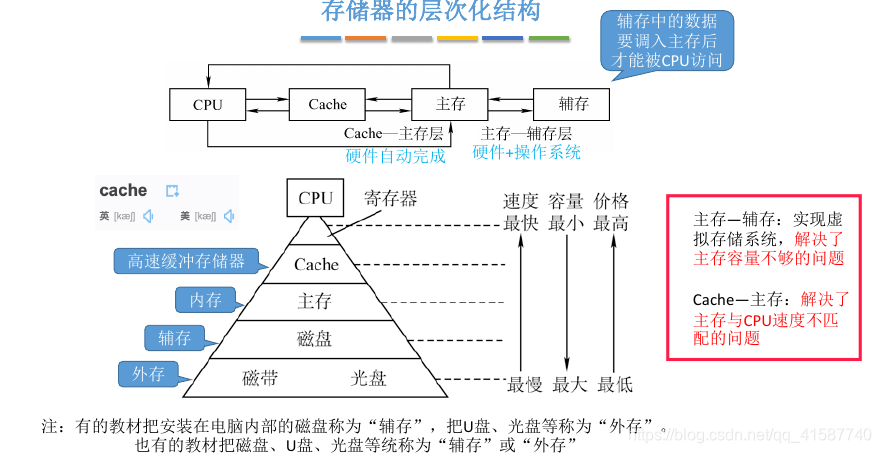
从上到下价格越来越低，速度越来越慢，容量越来越大，CPU 访问频度越来越低
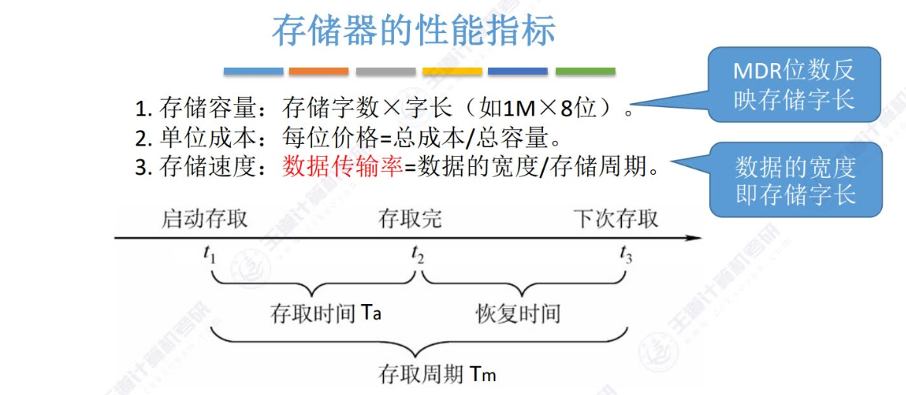
存储时间与存储周期的关系
主存 - Cache 之间的数据调用由硬件自动完成，对所有程序员均是透明的
主存 - 辅存的数据调用由硬件和操作系统共同完成，对应用程序员是透明的
# 主存储器
存储元件：MOS 管
# SRAM & DRAM
RAM: SRAM 静态随机存储器和 DRAM 动态随机存储器
主存主要是 DRAM，Cache 主要是 SRAM，都易失
DRAM 芯片：使用栅极电容存储信息，只要一个晶体管，读写更慢，是破坏性读出，需要重写，成本低，集成度高，功耗低
SRAM 芯片：使用双稳态触发器存储信息（六晶体管 MOS，RS, JK, D）。读写更快，是非破坏性读出，成本高，集成度低，功耗大
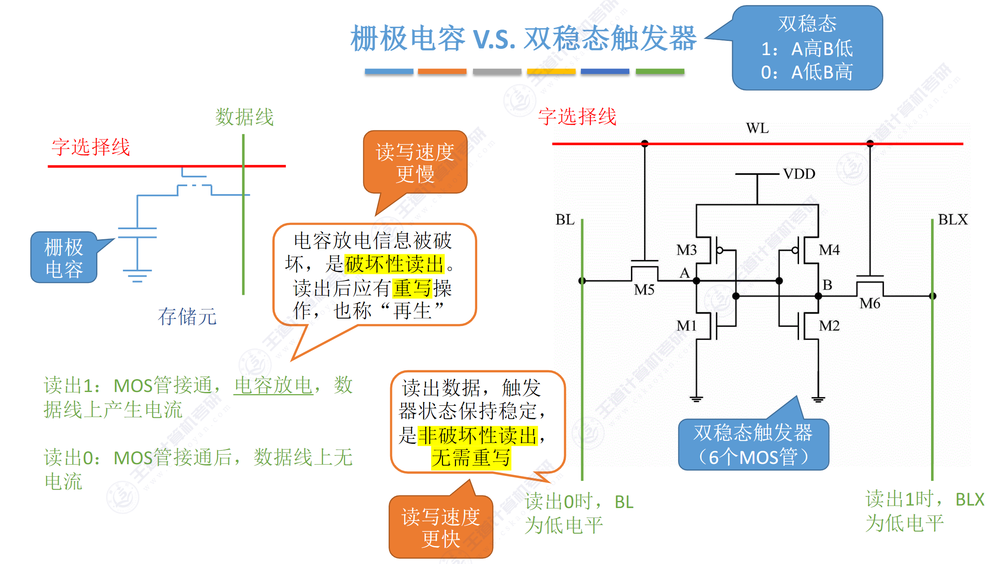
栅极电容需要一直刷新给电容充电，触发器不需要刷新，只要不断电状态不会改变
# DRAM 的刷新
- 多久需要刷新一次？ 刷新周期：一般为 2ms
- 每次刷新多少存储单元？以行为单位，每次刷新一行存储单元
—— 为什么要用行列地址？减少选通线的数量 - 在什么时刻刷新？
有硬件支持，读出一行的信息后重新写入，占用 1 个读 / 写周期
假设 DRAM 内部结构排列成 128×128 的形式，读 / 写周期 0.5us
2ms 共 2ms/0.5us = 4000 个周期
三种刷新方式：
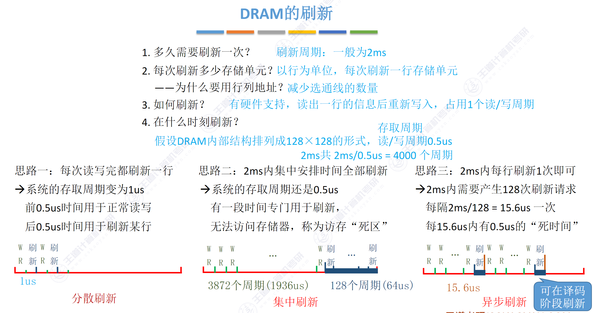
刷新以行为单位，再生（重写）只需要恢复被读出来的存储单元
刷新由存储器独立完成，不需要 CPU 控制
# DRAM 的地址引脚复用技术
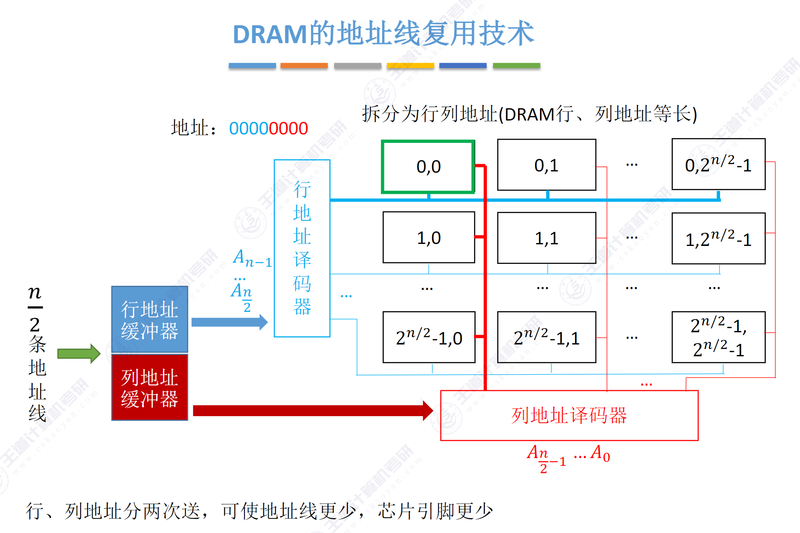
行列地址分成两次送，节省了一半的地址线
行列数优化原则：尽量使行、列数相同，且行数较少（因为按行刷新）
目前常用 SDRAM（同步 DRAM），数据交换同步于 CPU 的时钟信号，使得 CPU 不需要等待
# ROM
结构简单、非易失性
类型：
- MROM 掩模式 ROM
在芯片生产过程中写入，无法改变，可靠性高，急程度高，价格便宜，灵活性差 - PROM 一次可编程 ROM
可以用专门的设备写入一次，一旦写入无法改变 - EPROM 可擦除可编程 ROM
可以写入并多次改写，但是编程次数有限且时间长 - Flash
兼有 RAM 和 ROM 的优点，可以不加电长期保存信息，又能在线快速擦除和重写，价格便宜，急程度高，电可擦除重写且速度快
SSD 固态硬盘基于 Flash，由控制单元和 Flash 组成，长期保存、快速擦除和重写，对比传统硬盘读写速度快。低功耗。但是价格高
# 主存储器的基本组成
核心部件：一个个存储 0 或 1 的存储单元构成的存储矩阵
访问主存时，CPU 把地址送到 MAR，MAR 通过地址总线把地址送到主存中的地址寄存器，地址译码器进行译码，选中相应的内存单元，然后通过控制电路决定读 / 写操作：
- 读操作：将选中的内存单元的内容通过数据总线送到 MDR 中
- 写操作：将 MDR 中的内容通过数据总线送到选中的内存单元中
MDR 的位数和数据总线位数相同，通常等于存储字长；MAR 的位数和地址总线位数相同
# 多模块存储器
DRAM 芯片的恢复时间比较长，有可能是存取时间的几倍（SRAM 的恢复时间较短）。CPU 的读写速度比主存快很多，主存恢复时间太长
—— 利用多个完全相同的存储模块并行工作来提高吞吐率：单体多字存储器，多体低位交叉存储器
- 双端口 RAM（408 不考，了解即可）
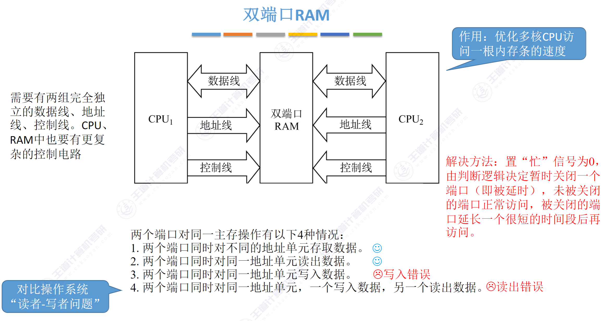
-
单体多字存储器
一般一个存储单元只存储一个 word，但是单体多字存储器一个存储单元存储多个 word，然后读的时候一次性读取这多个字。好处是快，缺点是只有指令和数据连续存放时才能提高存取速度，否则造成不必要的读取。 -
多体并行存储器（重点）
分为高位交叉编址和低位交叉编址两种
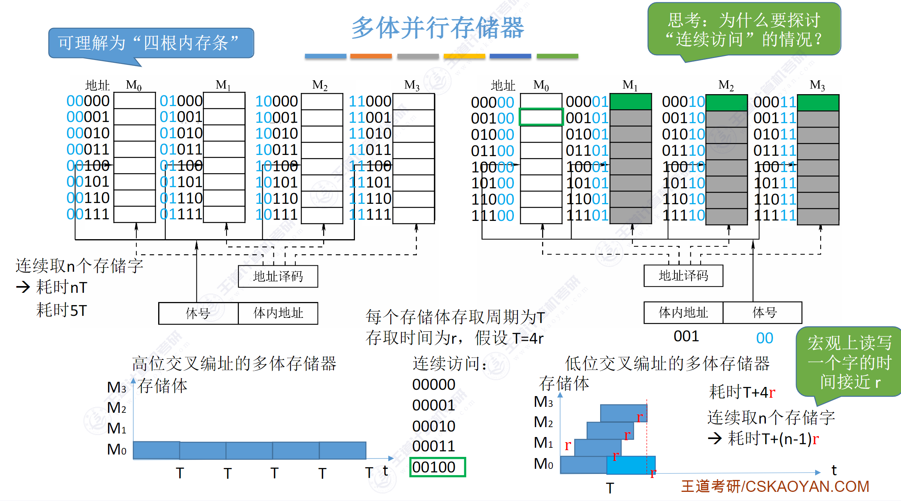
高位交叉编址每一块存储体的高位是一样的，实际上还是顺序存储。因此访问连续内存实际上访问的还是同一块存储体，并不能通过并行加快访问速度
低位交叉编址的每一块存储体低位相同，因此可以在恢复时间并行存取下一块内存的数据
存取周期为T, 存取时间为r, T = r + 恢复时间
对于 n 个存储器并行访问的存储器：
采用高位交叉编址的时间为n*T
低位交叉编址为T + (n-1)*r
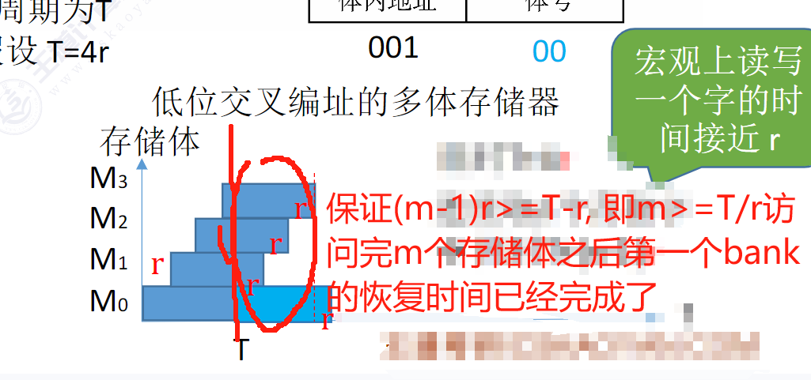
- 轮流启动：每个 bank 的存储位数等于数据总线的位数，此时采用轮流启动
- 对于低位交叉编址，要保证
m>=T/r，以保证流水线不间断 - 理想情况下，m 个 bank 的交叉存储器每隔
T/m个周期可以读 / 写一个数据，若相邻 m 次访问的当存地址出现在同一个模块内，则会发生访存冲突，此时需要延迟发生冲突的访问请求。
- 对于低位交叉编址，要保证
- 同时启动：如果 m 个 bank 的总位数加起来刚好等于数据总线的位数，则 m 个同时存 / 取
# 主存储器与 CPU 的连接
# 连接原理
通过总线连接（控制、地址、数据）
传输速率 = 总线宽度 / 传输时间
地址总线的位数决定了可寻址的最大内存空间
控制总线指出总线周期的类型和本次输入输出完成的时刻
将多个芯片集成在内存条上，由多个内存条和主板上的 ROM 芯片组成计算机所需的主存空间，通过总线与 CPU 连接
# 主存容量的扩展
数据总线宽度 > 存储字长 —— 位扩展
地址总线宽度 > 存储字数量所需的宽度
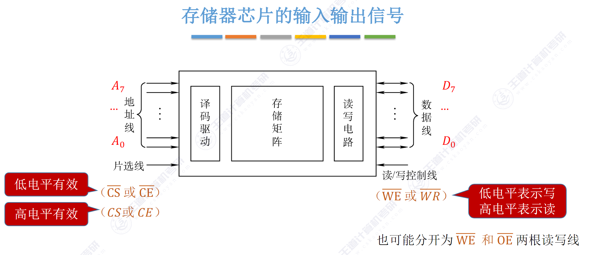
-
位扩展法：增加存储字长
由于数据总线宽度大于存储字长，存在浪费情况，必须进行位扩展使数据位数与数据总线位数相等
如图：
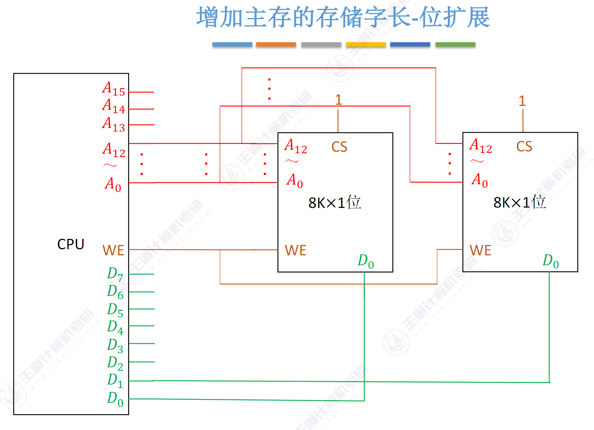 -
字扩展法
地址总线存在浪费情况，对存储字的数量进行扩展
用多出来的地址线提供 CS 片选信号，决定输出的是哪个芯片的数据
- 线选法：n 条多余的地址线，对应 n 个选片信号，地址空间不连续造成地址空间浪费（只能有一个 1 有效），电路简单
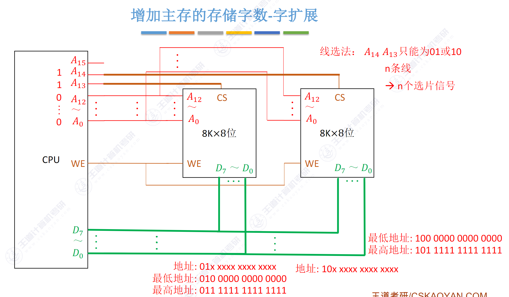 - 译码器选法：n 条多余的线对应 个选片信号，地址空间可以连续
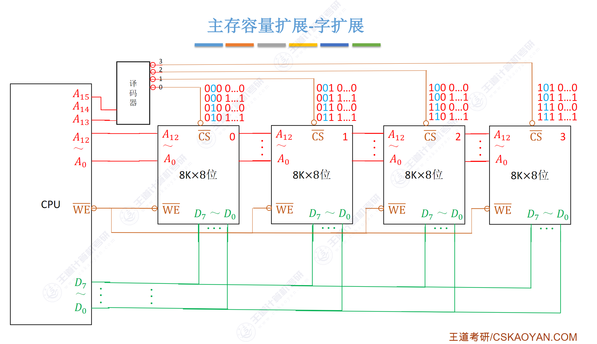
- 字、位同时扩展
既增加存储字的数量，又增加存储字长
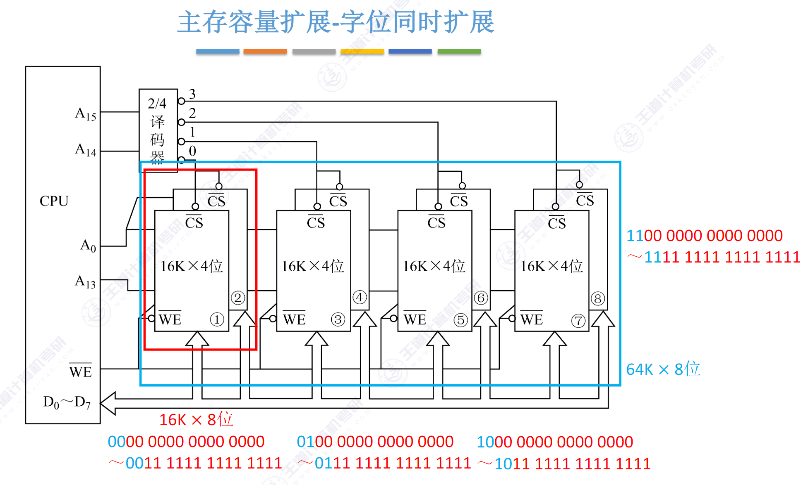
# 存储芯片的地址分配和片选
见上方线选法译码器选法
# 存储器与 CPU 的连接
…
片选信号还与 CPU 的方寸控制信号 有关（低电平有效），若 CPU 访问 IO 则此信号为高电平
MAR 位数要看主存地址空间大小，而不能看实际上用了多少位
# 外部存储器
磁盘存储器是以磁盘为存储介质的存储器，优点：容量大，价格低；记录介质可重复使用；可以长期保存；非破坏性读出。缺点：存取速度慢；机械结构复杂；对工作环境要求高
# 磁盘存储器
- 磁盘存储器
-
组成：磁盘驱动器，磁盘控制器，盘片
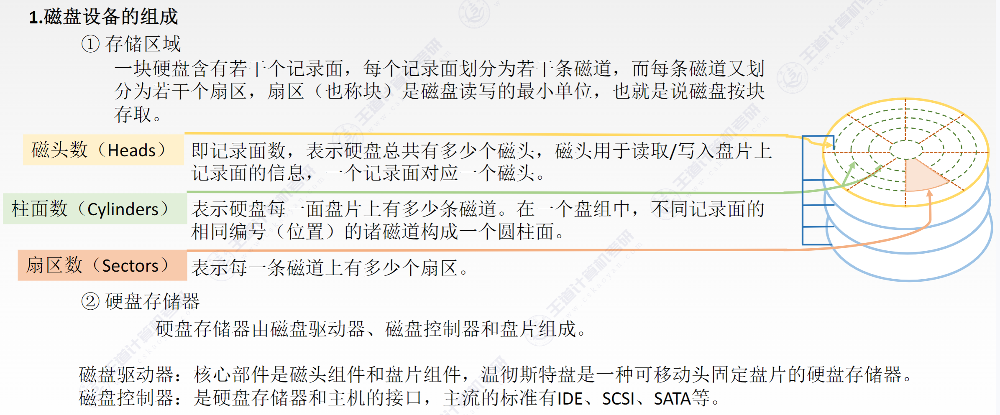 -
存储区域：扇区（也称块）是磁盘读写的最小单位，按块存取
- 磁头数 (Heads)：一个记录面对应一个磁头
- 柱面数 (Cylinders)：表示每面盘片上的磁道数，不同记录面的相同位置的磁道构成一个柱面
- 扇区数 (Sectors)：每条磁道上有多少扇区
-
Disk Cache
- 在内存上的一片区域，用来缓冲被送到磁盘上的数据。优点：写磁盘时按簇进行，可以避免频繁地用小块数据写；中间结果数据写回之前可以被快速再次使用
-
磁记录原理
- 原理：当磁头和磁性记录介质有相对运动时，通过电磁转换完成读 / 写操作。
- 编码方法：按某种方案（规律），把一连串的二进制信息变换成存储介质磁层中一个磁化翻转状态的序列，并使读 / 写控制电路容易、可靠地实现转换。
- 磁记录方式：通常采用调频制（FM）和改进型调频制（MFM）的记录方式。
-
性能指标
-
磁盘的容量：一个磁盘所能存储的字节总数称为磁盘容量。磁盘容量有非格式化容量和格式化容量之分。
非格式化容量是指磁记录表面可以利用的磁化单元总数，非格式化容量 = 记录面数 * 柱面数 * 每条磁道的磁化单元数
格式化容量是指按照某种特定的记录格式所能存储信息的总量，格式化容量 = 记录面数 * 柱面数 * 每道扇区数 * 每个扇区的容量
格式化容量 < 非格式化容量 -
记录密度：记录密度是指盘片单位面积上记录的二进制的信息量，通常以
道密度、位密度和面密度表示。道密度是沿磁盘半径方向单位长度上的磁道数；位密度是磁道单位长度上能记录的二进制代码位数；面密度是位密度和道密度的乘积。
磁盘所有磁道记录的信息量一定是相等的，并不是圆越大信息越多，故每个磁道的位密度都不同，越靠近圆心位密度越大 -
平均存取时间：
平均存取时间 = 寻道时间（磁头移动到目的磁道）+ 旋转延迟时间（磁头定位到所在扇区）+ 传输时间（传输数据所花费的时间）
寻道时间通常取从最外道到最内道时间的一半，旋转延迟时间通常取旋转半周的时间 -
数据传输率：磁盘存储器在单位时间内向主机传送数据的字节数，称为数据传输率
假设磁盘转速为 r（转 / 秒），每条磁道容量为 N 个字节，则数据传输率为
-
-
磁盘地址
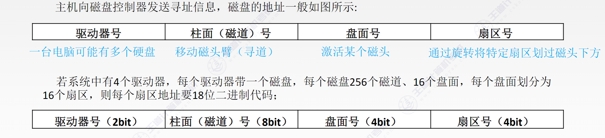 -
磁盘的工作原理
硬盘的主要操作是寻址、读盘、写盘。每个操作都对应一个控制字，硬盘工作时，第一步是取控制字，第二步是执行控制字。
硬盘属于机械式部件，其读写操作是串行的，不可能在同一时刻既读又写，也不可能在同一时刻读两组数据或写两组数据。
- RAID
将多个独立的物理磁盘组成一个独立的逻辑磁盘，数据分割交叉存储，并行访问。
- RAID0：无冗余和无校验的磁盘阵列。
- RAID1：镜像磁盘阵列。每份数据存两遍，成本太高
- RAID2：采用纠错的海明码的磁盘阵列。
逻辑上连续的几个 bit 物理上分散存储在各个盘中 4bit 信息位 + 3bit 海明校验位 —— 可纠正 1bit 错误
每个码字有m个信息位和r个冗余位，$ (m+r+1)≤2^r$
参考 xyx 学长的计网笔记：
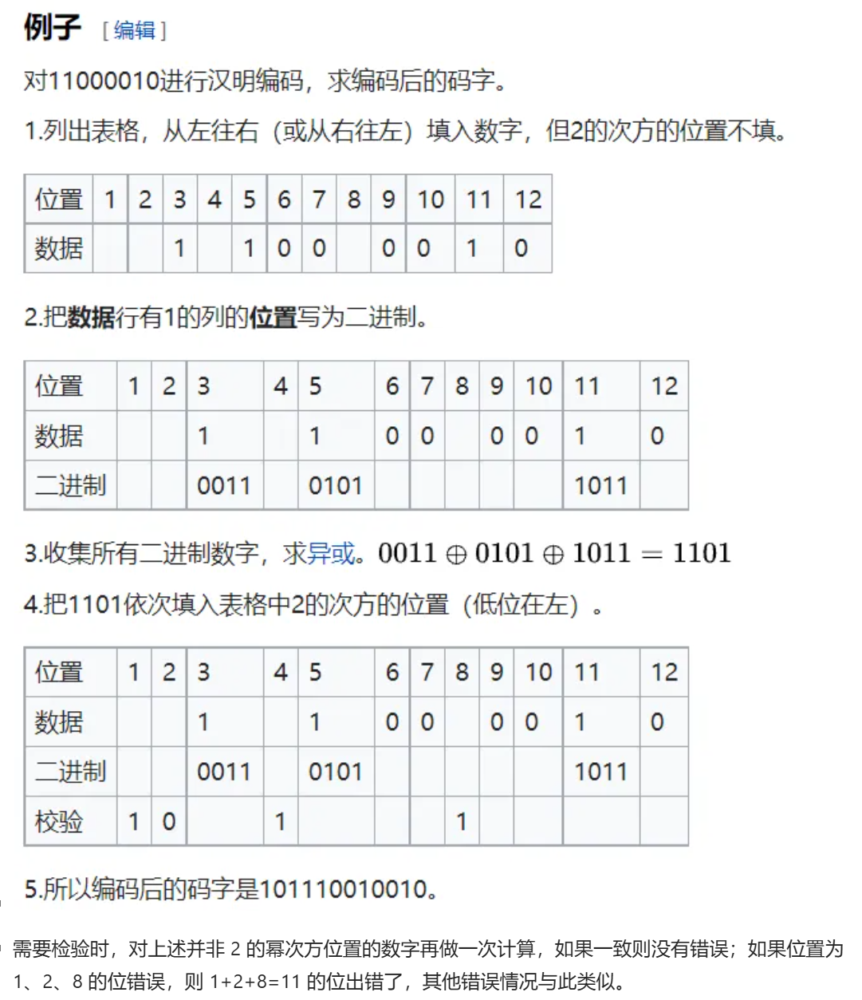 - RAID3：位交叉奇偶校验的磁盘阵列。前三个盘的奇偶校验位写在第四个盘上
- RAID4：块交叉奇偶校验的磁盘阵列。
- RAID5：无独立校验的奇偶校验磁盘阵列。在所有磁盘之间分条，并且每个数据块的奇偶校验块 § 写入到同一条带上
RAID1-RAID5 数据不会损坏
# 固态硬盘 (SSD)
- 特性
属于 Flash memory, EEPROM
组成：闪存翻译层，存储介质
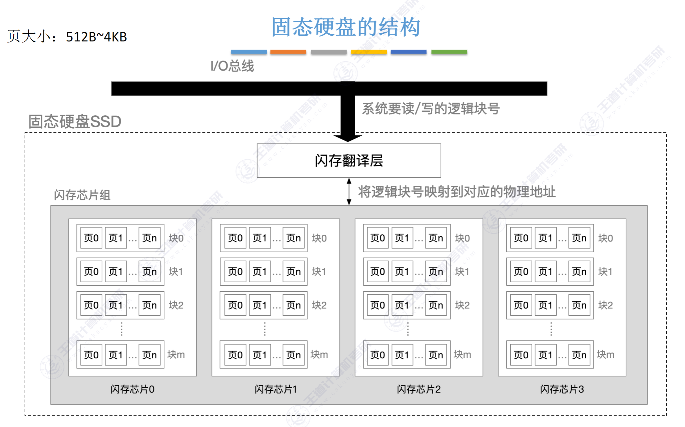
数据以页为单位读写，以块为单位擦除只有整个块被擦除之后才能写这一页，若视图修改包含已有数据的页，则这个快中所有含有有用数据的页必须被复制到新的空白的块中，才能对 进行写操作
SSD 的优点：随机写很慢，随机读比机械磁盘块，没噪声，能耗低，抗震性好，安全性高 - Wear Leveling 磨损均衡
重复擦写块就会磨损坏，一般是几百次到几千次
(1) 动态磨损均衡：写入时优先选择擦除次数少的新闪存块，只在写入时触发，仅考虑可用空间（对于冷数据不包括在空间池中，减少了可以用的 block 数量）
(2) 静态磨损均衡：就算没有写入，SSD 也会监测并自动进行数据分配，让老的闪存快以读为主，让新的块腾出空间，以写为主：将数据从写入 / 擦除次数较低的 block 移动到其他 block 中，这样可以将低擦写次数的 block 释放出来，添加到可用可用空间池中，以便后续使用。仅覆盖单个闪存芯片单元